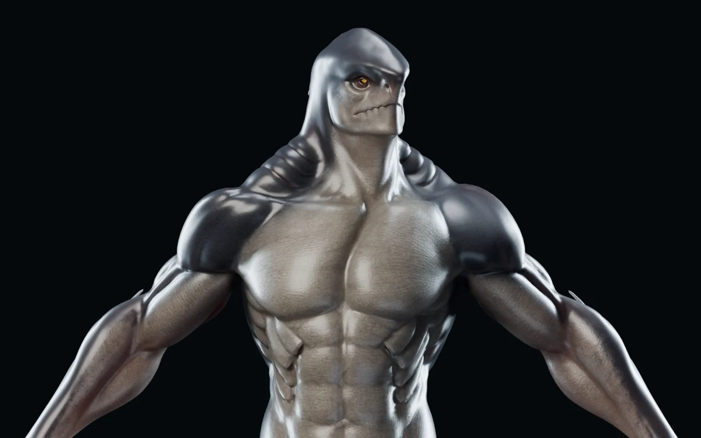

MAKRION
Painted live by a small neural network. Not a video. Move your cursor.
Loading the model 0

This page paints Makrion live with WebGPU, which this browser does not offer. This is one frame of the offline render it learnt from. Try a recent Chrome or Edge on a desktop.